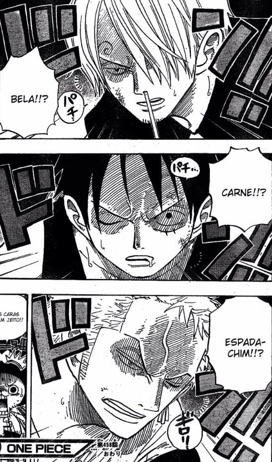
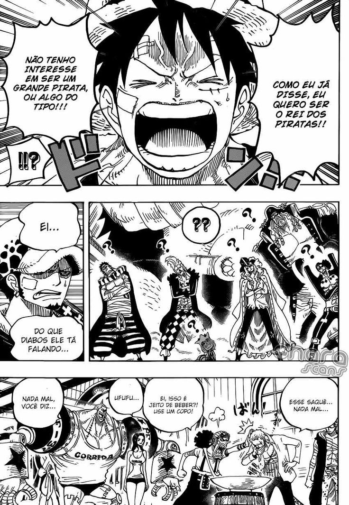

One Piece
One Piece é um dos animes mais famosos, longevos e influentes de todos os tempos, baseado na obra-prima do autor Eiichiro Oda. A história se passa em um mundo vasto dominado por oceanos e ilhas exóticas, e gira em torno da "Grande Era dos Piratas".


A trama começa com a execução de Gol D. Roger, o Lendário Rei dos Piratas. Antes de morrer, ele revela ao mundo que escondeu seu maior tesouro, o One Piece, em algum lugar da última ilha da Grand Line (a rota marítima mais perigosa do planeta). Anos depois, o jovem Monkey D. Luffy decide ir para o mar com o sonho de encontrar esse tesouro e se tornar o novo Rei dos Piratas. No caminho, Luffy — que ganhou o poder de esticar seu corpo como borracha após comer uma fruta mística (Akuma no Mi) — recruta uma tripulação leal, os Piratas do Chapéu de Palha.
Shonen Classico / Aventura
Ação e Luta
Comedia
Drama e Misterio